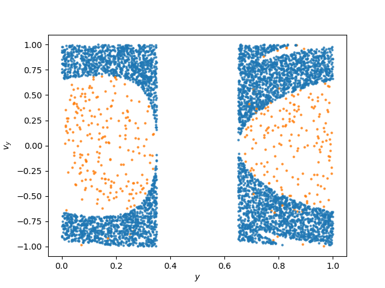

High Level API
DynamicalBilliards was created with ease-of-use as its main cornerstone. With 3 simple steps, the user can get the output of the propagation of a particle in a billiard.
In general, the workflow of DynamicalBilliards follows these simple steps:
- Create a billiard.
- Create particles inside that billiard.
- Get the output you want by using one of the high level functions.
Adding more complexity in your billiard does not add complexity in your code. For example, to implement a ray-splitting billiard you only need to define one additional variable, a RaySplitter and pass it to the high level functions.
After reading through this page, you will be able to use almost all aspects of DynamicalBilliards with minimal effort.
Visualizations
Visualizing the billiards, particles and their motion is one of the most important parts of the DynamicalBilliards. It is not discussed in this page however, but rather in the Visualizing page.
Billiard
A Billiard is simply a collection of Obstacle subtypes. Particles are propagating inside a Billiard, bouncing from obstacle to obstacle while having constant velocity in-between.
There is a tutorial on how to create your own billiard. In addition, there are many pre-defined billiards that can be found in the Standard Billiards Library section. That is why knowing how to construct a Billiard is not important at this point.
In this page we will be using the Bunimovich billiard as an example:
using DynamicalBilliards bd = billiard_bunimovich()
Billiard{Float64} with 4 obstacles: Bottom wall Right semicircle Top wall Left semicircle
Particles
A "particle" is that thingy that moves around in the billiard. It always moves with velocity of measure 1, by convention.
Currently there are two types of particles:
Particle, which propagates as a straight line.MagneticParticle, which propagates as a circle instead of a line (similar to electrons in a perpendicular magnetic field).
There are two ways to create a particle. The first one is to provide the constructor with some initial conditions:
x0 = rand(); y0 = rand(); φ0 = 2π*rand() p = Particle(x0, y0, φ0)
Particle{Float64} position: [0.589444, 0.856187] velocity: [0.505821, 0.862639]
To create a MagneticParticle simply provide the constructor with one more number, the angular velocity:
ω = 0.5 mp = MagneticParticle(x0, y0, φ0, ω)
MagneticParticle{Float64} position: [0.589444, 0.856187] velocity: [0.505821, 0.862639] ang. velocity: 0.5
Why the {Float64} ?
When creating a billiard or a particle, the object is printed with {Float64} at the end. This shows what type of numbers are used for all numerical operations. If you are curious you can learn more about it in the numerical precision page.
Particles must be inside the Billiard!
Keep in mind that the particle must be initialized inside a billiard for any functionality to work properly and make sense. If you are not sure what we mean by that, then you should check out the Internals page.
Random initial conditions
If you have a Billiard which is not a rectangle, creating many random initial conditions inside it can be a pain. Fortunately, the second way to create a particle is to use the following function:
#
DynamicalBilliards.randominside — Function.
randominside(bd::Billiard [, ω])
Return a particle with random allowed initial conditions inside the given billiard. If supplied with a second argument the type of the returned particle is MagneticParticle, with angular velocity ω.
For example:
p = randominside(bd)
Particle{Float64} position: [1.05844, 0.181052] velocity: [0.884088, -0.46732]
and
mp = randominside(bd, ω)
MagneticParticle{Float64} position: [0.221676, 0.160821] velocity: [0.967513, -0.252823] ang. velocity: 0.5
randominside always creates particles with same number type as the billiard.
evolve & timeseries
Now that we have created a billiard and a particle inside, we want to evolve it! There is a simple function for that, called evolve! (or evolve if you don't want to mutate the particle), which returns the time, position and velocities at the collision points:
#
DynamicalBilliards.evolve! — Function.
evolve!([p::AbstractParticle,] bd::Billiard, t)
Evolve the given particle p inside the billiard bd. If t is of type AbstractFloat, evolve for as much time as t. If however t is of type Int, evolve for as many collisions as t. Return the states of the particle between collisions.
This function mutates the particle, use evolve otherwise. If a particle is not given, a random one is picked through randominside.
Return
ct::Vector{T}: Collision times.poss::Vector{SVector{2,T}}: Positions at the collisions.vels::Vector{SVector{2,T}}): Velocities exactly after the collisions.ω, eitherTorVector{T}: Angular velocity/ies (returned only for magnetic particles).
The time ct[i+1] is the time necessary to reach state poss[i+1], vels[i+1] starting from the state poss[i], vels[i]. That is why ct[1] is always 0 since poss[1], vels[1] are the initial conditions. The angular velocity ω[i] is the one the particle has while propagating from state poss[i], vels[i] to i+1.
Notice that at any point, the velocity vector vels[i] is the one obdained after the specular reflection of the i-1th collision.
Ray-splitting billiards
evolve!(p, bd, t, raysplitters)
To implement ray-splitting, the evolve! function is supplemented with a fourth argument, raysplitters which is a tuple of RaySplitter instances. Notice that evolve always mutates the billiard if ray-splitting is used! For more information and instructions on using ray-splitting please visit the official documentation.
Forget the ray-splitting part for now (see Ray-Splitting).
Let's see an example:
ct, poss, vels = evolve(p, bd, 100) for i in 1:5 println(round(ct[i], digits=3), " ", poss[i], " ", vels[i]) end
0.0 [1.05844, 0.181052] [0.884088, -0.46732] 0.23 [1.2614, 0.0737713] [-0.0157161, 0.999876] 0.861 [1.24787, 0.934233] [-0.868965, -0.494874] 1.738 [-0.262187, 0.0742561] [0.0508322, 0.998707] 0.877 [-0.217605, 0.950164] [0.814228, -0.580545]
Similarly, for magnetic propagation
ct, poss, vels, ω = evolve(mp, bd, 100) for i in 1:10 println(round(ct[i], digits=3), " ", poss[i], " ", vels[i]) end
0.0 [0.221676, 0.160821] [0.967513, -0.252823] 1.21 [1.41199, 0.216689] [-0.0165963, 0.999862] 0.721 [1.27186, 0.919632] [-0.999027, -0.0441131] 1.818 [-0.270589, 0.0795461] [0.502246, 0.864725] 0.968 [-0.00180544, 0.999997] [0.0492348, -0.998787] 1.064 [0.324431, 0.0] [0.549233, 0.835669] 1.064 [0.650667, 1.0] [0.0492332, -0.998787] 1.064 [0.976903, 0.0] [0.549233, 0.835669] 0.967 [1.29599, 0.902978] [-0.920406, -0.390964] 1.362 [0.311432, 0.0] [-0.468917, 0.883242]
The above return types are helpful in some applications. In other applications however one prefers to have the time series of the individual variables. For this, the timeseries function is used:
#
DynamicalBilliards.timeseries! — Function.
timeseries!([p::AbstractParticle,] bd::Billiard, t; dt, warning)
Evolves the given particle p inside the billiard bd. If t is of type AbstractFloat, evolve for as much time as t. If however t is of type Int, evolve for as many collisions as t. Returns the time series for position and velocity as well as the time vector.
This function mutates the particle, use timeseries otherwise. If a particle is not given, a random one is picked through randominside.
The keyword argument dt is the time step used for interpolating the time series in between collisions. dt is capped by the collision time, as the interpolation always stops at collisions. For straight propagation dt = Inf, while for magnetic dt = 0.01.
For pinned magnetic particles, timeseries! issues a warning and returns the trajectory of the particle. If t is integer, the trajectory is evolved for one full circle only
Return:
- x position time-series
- y position time-series
- x velocity time-series
- y velocity time-series
- time vector
Ray-splitting billiards
timeseries!(p, bd, t, raysplitters; ...)
To implement ray-splitting, the timeseries! function is supplemented with a fourth argument, raysplitters which is a tuple of RaySplitter instances. Notice that timeseries always mutates the billiard if ray-splitting is used! For more information and instructions on using ray-splitting please visit the official documentation.
For example:
xt, yt, vxt, vyt, t = timeseries(p, bd, 100) # print as a matrix: hcat(xt, yt, vxt, vyt, t)[1:5, :]
5×5 Array{Float64,2}: 1.05844 0.181052 0.884088 -0.46732 0.0 1.2614 0.0737713 -0.0157161 0.999876 0.229565 1.24787 0.934233 -0.868965 -0.494874 0.860568 -0.262187 0.0742561 0.0508322 0.998707 1.73777 -0.217605 0.950164 0.814228 -0.580545 0.877042
Same story for magnetic particles:
# evolve the magnetic particle instead: xt, yt, vxt, vyt, t = timeseries(mp, bd, 100) # print as a matrix: hcat(xt, yt, vxt, vyt, t)[1:5, :]
5×5 Array{Float64,2}: 0.221676 0.160821 0.967513 -0.252823 0.0 0.231358 0.158317 0.968765 -0.247982 0.01 0.241051 0.155861 0.969992 -0.243135 0.02 0.250757 0.153454 0.971196 -0.238282 0.03 0.260475 0.151096 0.972375 -0.233423 0.04
Sometimes we may need information about which obstacles a particle visited, in which sequence, and when. For this we have the following function:
#
DynamicalBilliards.visited_obstacles! — Function.
visited_obstacles!([p::AbstractParticle,] bd::Billiard, t)
Evolve the given particle p inside the billiard bd exactly like evolve!. However return only:
ts::Vector{T}: Vector of time points of when each collision occured.obst::Vector{Int}: Vector of obstacle indices inbdthat the particle collided with at the time points ints.
The first entries are 0.0 and 0. Similarly with evolve! the function does not record collisions with periodic walls.
Currently does not support raysplitting. Returns empty arrays for pinned particles.
Type of t
Remember that the behavior of time evolution depends on the type of the t argument, which represents "total amount". If it is AbstractFloat, it represents total amount of time, but if it is Int it represents total number of collisions.
Poincaré Sections
#
DynamicalBilliards.psos — Function.
psos(bd::Billiard, plane::InfiniteWall, t, particles)
Compute the Poincaré section of the particles with the given plane, by evolving each one for time t (either integer or float) inside bd.
The plane can be an InfiniteWall of any orientation, however only crossings of the plane such that dot(velocity, normal) < 0 are allowed, with normal the normal unit vector of the plane.
particles can be:
- A single particle.
- A
Vectorof particles. - An integer
noptionally followed by an angular velocityω.
Return the positions poss and velocities vels at the instances of crossing the plane. If given more than one particle, the result is a vector of vectors of vectors.
Notice - This function can handle pinned particles. If a pinned particle can intersect with the plane, then an intersection is returned. If however it can't then empty vectors are returned.
For example, the surface of section in the periodic Sinai billiard with magnetic field reveals the mixed nature of the phase-space:
using DynamicalBilliards, PyPlot t = 100; r = 0.15 bd = billiard_sinai(r, setting = "periodic") # the direction of the normal vector is IMPORTANT!!! # (always keep in mind that ω > 0 means counter-clockwise rotation!) plane = InfiniteWall([0.5, 0.0], [0.5, 1.0], [-1.0, 0.0]) posvector, velvector = psos(bd, plane, t, 1000, 2.0) c(a) = length(a) == 1 ? "C1" : "C0" figure() for i in 1:length(posvector) poss = posvector[i] # vector of positions vels = velvector[i] # vector of velocities at the section L = length(poss) if L > 0 #plot y vs vy y = [a[2] for a in poss] vy = [a[2] for a in vels] plot(y, vy, ls = "None", color = c(y), ms = 2.0, alpha = 0.75, marker = "o") end end xlabel("\$y\$"); ylabel("\$v_y\$")

psos operates on the unit cell
The psos function always calculates the crossings within the unit cell of a periodic billiard. This means that no information about the "actual" position of the particle is stored, everything is modulo the unit cell.
This can be seen very well in the above example, where there aren't any entries in the region 0.5 - r ≤ y ≤ 0.5 + r.
Of course it is very easy to "re-normalize" the result such that it is coherent. The only change we have to do is simply replace the line y = [a[2] for a in poss] with
y = [a[2] < 0.5 ? a[2] + 1 : a[2] for a in poss]
Escape Times
It is very easy to create your own function that calculates an "escape time": the time until the particle leaves the billiard by meeting a specified condition. There is also a high-level function for this though:
#
DynamicalBilliards.escapetime — Function.
escapetime([p,] bd, t; warning = false)
Calculate the escape time of a particle p in the billiard bd, which is the time until colliding with any "door" in bd. As a "door" is considered any FiniteWall with field isdoor = true.
If the particle evolves for more than t (integer or float) without colliding with the Door (i.e. escaping) the returned result is Inf.
A warning can be thrown if the result is Inf. Enable this using the keyword warning = true.
If a particle is not given, a random one is picked through randominside. See parallelize for a parallelized version.
Creating a door
To create a "door" simply visit the library page to learn more about the individual obstacle types (specifically FiniteWall). To be able to combine them into a Billiard you should also check out the tutorial on defining your own billiard.
For example, the default implementation of the mushroom billiard has a "door" at the bottom of the stem. Thus,
using Statistics bd = billiard_mushroom() et = zeros(100) for i ∈ 1:100 particle = randominside(bd) et[i] = escapetime(particle, bd, 10000) end println("Out of 100 particles, $(count(x-> x != Inf, et)) escaped") println("Mean escape time was $(mean(et[et .!= Inf]))")
Out of 100 particles, 25 escaped Mean escape time was 3.470901893918438
Of course, escapetime works with MagneticParticle as well
escapetime(randominside(bd, 1.0), bd, 10000)
1.3136459955369302
Mean Collision Times
Because the computation of a mean collision time (average time between collisions in a billiard) is often a useful quantity, the following function computes it
#
DynamicalBilliards.meancollisiontime — Function.
meancollisiontime([p,] bd, t) → κ
Compute the mean collision time κ of the particle p in the billiard bd by evolving for total amount t (either float for time or integer for collision number).
Collision times are counted only between obstacles that are not PeriodicWall.
If a particle is not given, a random one is picked through randominside. See parallelize for a parallelized version.
For example,
bd = billiard_sinai() meancollisiontime(randominside(bd), bd, 10000.0)
0.4568888457863777
Parallelization
#
DynamicalBilliards.parallelize — Function.
parallelize(f, bd::Billiard, t, particles; partype = :threads)
Parallelize function f across the available particles. The parallelization type can be :threads or :pmap, which use threads or a worker pool initialized with addprocs before using DynamicalBilliards.
particles can be:
- A
Vectorof particles. - An integer
noptionally followed by an angular velocityω. This usesrandominside.
The functions usable here are:
meancollisiontimeescapetimelyapunovspectrum(returns only the maximal exponents)boundarymap(returns vector of vectors of 2-vectors andarcintervals)
Here are some examples
bd = billiard_stadium() particles = [randominside(bd) for i in 1:1000] parallelize(meancollisiontime, bd, 1000, particles)
1000-element Array{Float64,1}: 1.0676288978336281 1.0946102665594486 1.0686163308008265 1.0286993347440687 1.0952003527558138 1.1094355436757826 1.0945204828802881 1.0404442099697064 1.0689436948851025 1.1052080074758017 ⋮ 1.105796881986313 1.0737267162115622 1.0772257971765333 1.1017381587651784 1.0894848732655584 1.1135662429546194 1.08723868236331 1.0895805332061632 1.125002945190703
parallelize(lyapunovspectrum, bd, 1000, particles)
1000-element Array{Float64,1}: 0.8049178221540553 0.7737964804476328 0.9073739704608681 0.9221747375536452 0.8742945486214014 0.8814045878283912 0.8377698163700056 0.8717346748006379 0.8144935258724074 0.8803206624818869 ⋮ 0.8928388112751097 0.923102497571249 0.8496418715494414 0.9015925733210127 0.8252291338627149 0.8811284400182752 0.7952841379696938 0.875107184212258 0.8937604687230214
It's all about bounce!
The main propagation algorithm used by DynamicalBilliards is bundled in the following well-behaving function:
#
DynamicalBilliards.bounce! — Function.
bounce!(p::AbstractParticle, bd::Billiard) → i, t, pos, vel
"Bounce" the particle (advance for one collision) in the billiard. Takes care of finite-precision issues.
Return:
- index of the obstacle that the particle just collided with
- the time from the previous collision until the current collision
t - position and velocity of the particle at the current collision (after the collision has been resolved!). The position is given in the unit cell of periodic billiards. Do
pos += p.current_cellfor the position in real space.
bounce!(p, bd, raysplit) → i, t, pos, vel
Ray-splitting version of bounce!.
bounce! is the function used internally by all high-level functions, like evolve!, boundarymap, escapetime, etc.
This is the function a user should use if they want to calculate other things besides what is already available in the high level API.
Standard Billiards Library
You can also use keywords!
All standard billiards have a function version that accepts keyword arguments instead of positional arguments, for ease of use.
#
DynamicalBilliards.billiard_rectangle — Function.
billiard_rectangle(x=1.0, y=1.0; setting = "standard")
Return a vector of obstacles that defines a rectangle billiard of size (x, y).
Settings
- "standard" : Specular reflection occurs during collision.
- "periodic" : The walls are
PeriodicWalltype, enforcing periodicity at the boundaries - "random" : The velocity is randomized upon collision.
- "ray-splitting" : All obstacles in the billiard allow for ray-splitting.
#
DynamicalBilliards.billiard_sinai — Function.
billiard_sinai(r=0.25, x=1.0, y=1.0; setting = "standard")
Return a vector of obstacles that defines a Sinai billiard of size (x, y) with a disk in its center, of radius r.
In the periodic case, the system is also known as "Lorentz Gas".
Settings
- "standard" : Specular reflection occurs during collision.
- "periodic" : The walls are
PeriodicWalltype, enforcing periodicity at the boundaries - "random" : The velocity is randomized upon collision.
- "ray-splitting" : All obstacles in the billiard allow for ray-splitting.
#
DynamicalBilliards.billiard_bunimovich — Function.
billiard_bunimovich(l=1.0, w=1.0)
Return a vector of Obstacles that define a Buminovich billiard, also called a stadium. The length is considered without the attached semicircles, meaning that the full length of the billiard is l + w. The left and right edges of the stadium are Semicircles.
billiard_stadium is an alias of billiard_bunimovich.
#
DynamicalBilliards.billiard_mushroom — Function.
billiard_mushroom(sl = 1.0, sw = 0.2, cr = 1.0, sloc = 0.0; door = true)
Create a mushroom billiard with stem length sl, stem width sw and cap radius cr. The center of the cap (which is Semicircle) is always at [0, sl]. The center of the stem is located at sloc.
Optionally, the bottom-most Wall is a Door (see escapetime).
#
DynamicalBilliards.billiard_polygon — Function.
billiard_polygon(n::Int, R, center = [0,0]; setting = "standard")
Return a vector of obstacles that defines a regular-polygonal billiard with n sides, radius r and given center.
Note: R denotes the so-called outer radius, not the inner one.
Settings
- "standard" : Specular reflection occurs during collision.
- "periodic" : The walls are
PeriodicWalltype, enforcing periodicity at the boundaries. Only available forn=4orn=6. - "random" : The velocity is randomized upon collision.
#
DynamicalBilliards.billiard_hexagonal_sinai — Function.
billiard_hexagonal_sinai(r, R, center = [0,0]; setting = "standard")
Create a sinai-like billiard, which is a hexagon of outer radius R, containing at its center (given by center) a disk of radius r. The setting keyword is passed to billiard_polygon.
#
DynamicalBilliards.billiard_raysplitting_showcase — Function.
billiard_raysplitting_showcase(x=2.0, y=1.0, r1=0.3, r2=0.2) -> bd, rayspl
Showcase example billiard for ray-splitting processes. A rectangle (x,y) with a SplitterWall at x/2 and two disks at each side, with respective radii r1, r2.
Notice: This function returns a billiard bd as well as a rayspl dictionary!
#
DynamicalBilliards.billiard_logo — Function.
billiard_logo(;h=1.0, α=0.8, r=0.18, off=0.25) -> bd, ray
Create the billiard used as logo of DynamicalBilliards and return it along with the tuple of raysplitters.
#
DynamicalBilliards.billiard_iris — Function.
billiard_iris(a=0.2, b=0.4, w=1.0; setting = "standard")
Return a billiard that is a square of side w enclosing at its center an ellipse with semi axes a, b.
Particle types
#
DynamicalBilliards.Particle — Type.
Particle(ic::Vector{T}) #where ic = [x0, y0, φ0] Particle(x0, y0, φ0) Particle(pos::SVector, vel::SVector)
Create a particle with initial conditions x0, y0, φ0. It propagates as a straight line.
The field current_cell shows at which cell of a periodic billiard is the particle currently located.
#
DynamicalBilliards.MagneticParticle — Type.
MagneticParticle(ic::AbstractVector{T}, ω::Real) # where ic = [x0, y0, φ0] MagneticParticle(x0, y0, φ0, ω) MagneticParticle(pos::SVector, vel::SVector, ω) MagneticParticle(p::AbstractParticle, ω)
Create a magnetic particle with initial conditions x0, y0, φ0 and angular velocity ω. It propagates as a circle instead of a line, with radius 1/abs(ω).
The field current_cell shows at which cell of a periodic billiard is the particle currently located.